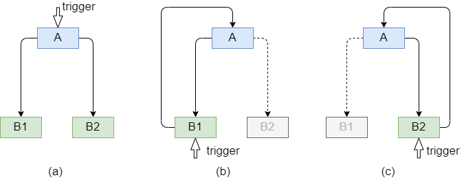
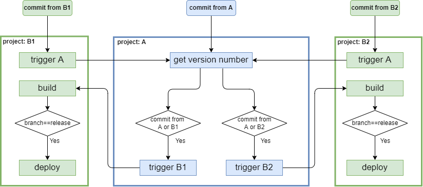
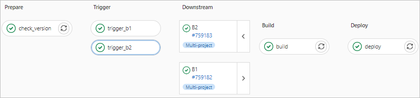
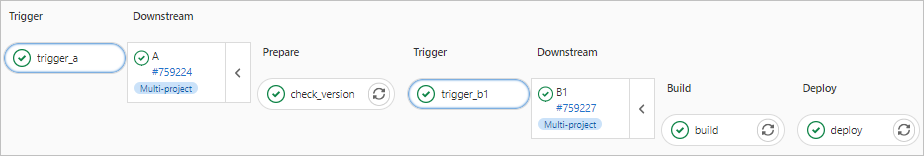

GitLab CI CD：跨项目触发pipeline¶
发布于：2022-01-27 | 分类：devops
近期遇到一个问题，如何灵活管理分系统的版本号和最终产品的版本号。例如，对于前后端分离且分仓库管理的Web项目，前、后端维护各自的版本号（前端1.2.3，后端1.3.4），并且发布Web产品时自动根据tag（1.0.0）作为产品的版本号编译到页面上。注意问题在于：最终产品的版本号很可能与前、后端都不相同，因此通过前端或者后端仓库提交tag发布产品都不合适。
基本思路：创建发布仓库¶
因此考虑新建一个发布仓库，仅维护汇总后的前后端更新日志和发布版本号。同时考虑到产品发布后的hotfix，也支持直接从受影响的前端或者后端仓库提交修复并部署。
综合来说，涉及两类自动化流程：
-
从发布仓库发布产品，同时触发前、后端仓库的部署，并根据提供的
tag更新产品版本号 -
从前、后端发布
hotfix，仅触发各自的部署，且不更新产品版本号，而是沿用发布仓库最新的tag
为简化表述，用A表示发布仓库，分别用B1、B2表示前、后端仓库，则可用下图表示以上流程。

具体流程¶
基本设定：
-
仓库
B1和B2任意提交触发编译build，忽略测试test，如果是release分支则触发部署deploy -
仓库
A仅在提交tag后触发流程
考虑到模块化和就近原则，仓库A负责获取当前最新的tag作为产品版本号，仓库B1、B2负责各自的编译和发布，只不过编译前需要拿到产品版本号。参考下图具体流程：
-
如果从仓库
A提交tag触发流程，则直接获取最新版本号，然后分别触发仓库B1和B2的流程。以
B1为例，注意此时直接到build这个任务；B2同理，不再赘述。 -
如果从仓库
B1提交，由于编译前需要获取产品当前版本号，因此通过trigger A任务触发仓库A的流程。类似上文所述
A的流程，只不过此时需要根据原始仓库（即B1）确定只触发B1的流程，进而来到B1的build。

最终效果¶
借助 GitLab CI/CD 的基本功能，执行效果参考下图，可见完整实现了上述流程。
- 从
A发布版本1.1.0

- 从
B1的release分支提交hotfix

实现细节¶
总结几个关键点：
-
跨项目触发流程，例如上图中
B1中trigger A和A中trigger B1、trigger B2 -
执行任务的时机，例如
B1中trigger A仅在直接提交时执行，而build仅当从上游流水pipeline触发时执行。 -
跨项目触发流程时传递参数，例如通过
B1的trigger A进入A的流程时，传递表明原始仓库即B1的参数，以便选择性进入trigger B1
跨项目触发流程¶
这是本文的基础，具体说明参考官方文档 Multi-project pipelines。
downstream-job:
variables:
UPSTREAM_BRANCH: $CI_COMMIT_REF_NAME
trigger:
project: path/to/downstream/project
branch: stable-11-2-
trigger关键字指定将要触发的下游项目的具体路径，同时可以指定基于的分支branch如果忽略分支即默认最新分支，则可以合并为
trigger: path/to/downstream/project -
variables关键字将当前流程的参数传递到下游流程的每个任务中去，例如此处$CI_COMMIT_REF_NAME表示当前分支名更多内置参数参考 Predefined CI/CD variables
注意：
trigger:project不支持变量输入，trigger:branch支持变量输入。
任务执行条件¶
GitLab CI/CD通过 only / except 和 rules 关键字，以非常灵活的方式将任务加入或者排除当前流程。
本文相关的几个例子：
-
从上游仓库触发
B1不执行trigger Atrigger_a: stage: trigger trigger: path/to/A except: - pipelines -
当且仅当从上游仓库触发
B1时才执行buildbuild: stage: build script: - ... only: - pipelines -
从上游仓库触发
B1且当前分支是release时才执行deploydeploy: stage: deploy script: - echo "Deploying application only if branch=release..." rules: - if: $CI_PIPELINE_SOURCE=="pipeline" && $SOURCE_BRANCH=="release"其中，
CI_PIPELINE_SOURCE也是默认CI/CD参数，表示流程的触发源，值pipeline表明从上游流程触发而来；SOURCE_BRANCH也是从上游流程传递过来的表明当前分支的自定义参数。 -
A中get version number任务只有在tag提交或者从其他流程触发而来才执行get_version_number: stage: prepare script: - ... only: - /^([0-9]+)\.([0-9]+)\.([0-9]+)$/ - pipelines -
A中trigger B1任务满足以下两种情形之一即可执行：-
直接从
A仓库tag提交 -
从其他流程触发且自定义参数
SOURCE_PROJECT的值等于B1即从B1触发的流程
trigger_b1: stage: trigger trigger: project: path/to/B1 branch: $TARGET_BRANCH rules: - if: $CI_COMMIT_TAG =~ /^([0-9]+)\.([0-9]+)\.([0-9]+)$/ - if: $CI_PIPELINE_SOURCE=="pipeline" && $SOURCE_PROJECT=="B1" -
完整ymal文件¶
补充一点：本例的产品版本号是通过保存文件的形式在两个流程间传递的，因此需要保证各流程都在同一台gitlab-runner上执行。而这，可以通过设定相同的tags来实现。
最后，分别列出各仓库的ymal文件。
# .gitlab-ci.yml for project A
variables:
PROJECT_B1: "B1"
PROJECT_B2: "B2"
VERSION_FILE: /tmp/version
TARGET_BRANCH: "release"
stages:
- prepare
- trigger
check_version:
stage: prepare
script:
- VERSION=$(git describe --tags $(git rev-list --tags --max-count=1)) # recent tag
- if [ "$VERSION" = "" ]; then VERSION="1.0.0"; fi
- VERSION="$VERSION.$(date +%Y%m%d)"
- echo $VERSION>$VERSION_FILE
only:
- /^([0-9]+)\.([0-9]+)\.([0-9]+)$/
- pipelines
tags:
- shell_runner
trigger_b1:
stage: trigger
variables:
SOURCE_BRANCH: $TARGET_BRANCH
trigger:
project: path/to/B1
branch: $TARGET_BRANCH
rules:
- if: $CI_COMMIT_TAG =~ /^([0-9]+)\.([0-9]+)\.([0-9]+)$/
- if: $CI_PIPELINE_SOURCE=="pipeline" && $SOURCE_PROJECT==$PROJECT_B1
trigger_b2:
stage: trigger
variables:
SOURCE_BRANCH: $TARGET_BRANCH
trigger:
project: path/to/B2
branch: $TARGET_BRANCH
rules:
- if: $CI_COMMIT_TAG =~ /^([0-9]+)\.([0-9]+)\.([0-9]+)$/
- if: $CI_PIPELINE_SOURCE=="pipeline" && $SOURCE_PROJECT==$PROJECT_B2# .gitlab-ci.yml for project B1; same with B2
stages:
- trigger
- build
- deploy
trigger_a:
variables:
SOURCE_PROJECT: $CI_PROJECT_NAME
TARGET_BRANCH: $CI_COMMIT_REF_NAME
stage: trigger
trigger: path/to/A
except:
- pipelines
build:
stage: build
script:
- VERSION=$(cat $VERSION_FILE)
- echo $VERSION
only:
- pipelines
tags:
- shell_runner
deploy:
stage: deploy
script:
- echo "Deploying application only if branch=release..."
rules:
- if: $CI_PIPELINE_SOURCE=="pipeline" && $SOURCE_BRANCH=="release"
tags:
- shell_runner